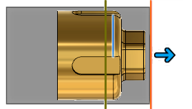

Distance de décalage de la limite de confinement avant, depuis le point de référence indiqué ci-dessus. Cette limite est affichée en orange; vous pouvez capturer et déplacer dynamiquement la position à l'aide de la souris.
 |
Décalage avant Affiché .100 (po) dans l'option Avant du modèle |
REMARQUE: cette valeur peut être positive ou négative à partir du point de référence.